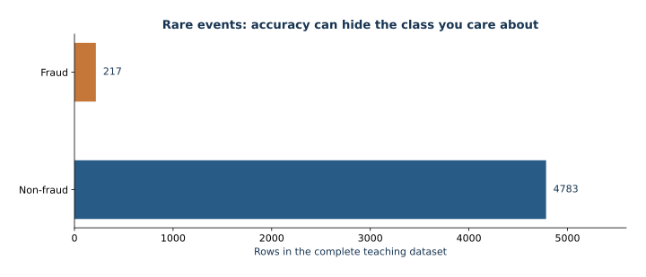

04 — Aprendizaje con clases desbalanceadas: decisiones sobre eventos raros
Esta lección usa una tabla de transacciones generada localmente y una etiqueta binaria poco frecuente; no representa a ningún banco ni proceso real de fraude.
Objetivos de aprendizaje
- Explicar por qué la exactitud oculta los fallos en la clase minoritaria y calcular la prevalencia.
- Derivar la verosimilitud logística e interpretar el riesgo ponderado por clase.
- Comparar modelos logísticos y XGBoost, ponderados y sin ponderar, sobre las mismas filas reservadas.
- Distinguir la precisión media (AP), el área trapezoidal PR, ROC-AUC, la prevalencia y la calibración.
- Elegir un umbral a partir de costos en validación y evaluar una sola vez en prueba la política ya fijada.
- Explicar cómo la ponderación de clases desplaza la escala posterior.
Recorrido matemático
Para $p_i=\sigma(x_i^T\beta)$, la log-verosimilitud logística negativa es $-\sum_i[y_i\log p_i+(1-y_i)\log(1-p_i)]$. La ponderación de clases multiplica cada término por $w_{y_i}$. Bajo pesos constantes ideales, el óptimo ponderado satisface $q/(1-q)=(w_1/w_0)p/(1-p)$, lo que desplaza los momios y las probabilidades. AP pondera la precisión por los incrementos de exhaustividad; el área trapezoidal PR interpola los puntos de la curva y, en general, difiere. La prevalencia sirve como referencia de precisión para una clasificación sin capacidad predictiva en la curva PR. ROC-AUC resume el ordenamiento; no es una regla de decisión. Para una probabilidad natural calibrada y costos constantes, el umbral de Bayes es $C_{FP}/(C_{FP}+C_{FN})$.
Pasos de estudio
- Lea la configuracióndel curso y luego lea este README una vez antes de abrir Jupyter.
- Ejecuta
lesson.ipynbel cuaderno de arriba abajo. Revise la prevalencia antes de ajustar y mantenga aparte la partición de prueba. - Siga la derivación del posterior ponderado; después, examine la comparación controlada de ponderaciones y su interpretación en términos de costos.
- Siga la selección del umbral en validación; evalúe una sola vez en prueba la política ya fijada.
Guía visual y ruta de estudio

Conteos calculados con el conjunto completo de datos de fraude proporcionado, antes de dividirlo. La cantidad de casos de la clase minoritaria explica por qué la exactitud no basta.
¿Es nuevo en estas bibliotecas? Empiece con el tutorial paso a paso del primer experimento. Lea los fundamentos, siga la implementación anotada y compare los ejemplos de parámetros desarrollados. Reserve unas 2–3 horas para la primera lectura; los experimentos detallados quizá requieran otra sesión.